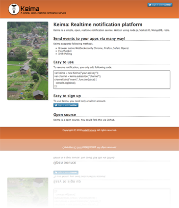

Keima
Tweet
Keima とは
Node.js で書かれた Pusher クローンです。 メッセージングサービスの基盤として使われることを想定して開発されています。

A World Wide
Messaging Hub
リポジトリ
codefirst / Keima - GitHub
デモサイト
Keima on Node Ninja
ドキュメント
Node.jsによるPusherクローン「Keima」をリリースしました (@mzp によるリリース記事)
通知プラットフォーム Keima を Node Ninja BETA へ配備する手順 (@suer によるデプロイ記事)
コミッタ
@mzp
@suer